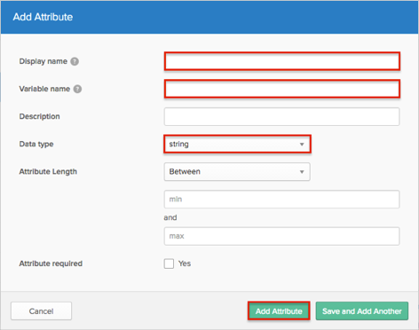

The Birst application is pre-configured to pass the custom attributes as part of the SAML assertion. Make sure that the custom attributes are populated in the Okta User Base Profile, and also have the correct attribute mappings set with AD/LDAP (if needed). If this value is empty, Okta will pass null values to Birst.
Follow these instructions to add a custom attribute:
In Okta, navigate to Admin > Directory > Profile Editor.
Select the Okta filter in the left side navigational pane.
Click the edit Profile button.

Click Add Attribute.

Enter an attribute value for the Display name and Variable name fields.
If needed, enter a Data Type.
Click Add Attribute.

The following Birst attributes are supported:
| Birst Attribute Name | Okta Attribute Variable Name |
|---|---|
| birst.embedded | birst_embedded |
| birst.module | birst_module |
| birst.spaceId | birst_spaceId |
| birst.dashboard | birst_dashboard |
| birst.page | birst_page |
| birst.filters | birst_filters |
| birst.hideDashboardNavigation | birst_hideDashboardNavigation |
| birst.hideHeader | birst_hideHeader |
| birst.themeName | birst_themeName |
| birst.dashboardParams | birst_dashboardParams |
| birst.dashParamsSeparator | birst_dashParamsSeparator |
| birst.hideDashboardPrompts | birst_hideDashboardPrompts |
| birst.viewMode | birst_viewMode |
| birst.filterLayout | birst_filterLayout |
| birst.renderType | birst_renderType |
| birst.viewHTML5 | birst_viewHTML5 |
| birst.helpURL | birst_helpURL |
| embeddedView | birst_embeddedView |
| reportName | birst_reportName |
| birst.userLoginName | birst_userLoginName |
| birst.userEmailAddress | birst_userEmailAddress |
| birst.accountId | birst_accountId |
| birst.group | birst_group |
| birst.memberSpaces | birst_memberSpaces |
| birst.userProfile | birst_userProfile |
| birst.defaultSpace | birst_defaultSpace |
| birst.dashboardsView | birst_dashboardsView |
| birst.spaceCreation | birst_spaceCreation |
| birst.userProfile | birst_userProfile |
You need to use Birst Account Admin settings to configure SAML setup.
The following data is required:
IDP Issuer/Entity ID: Copy and paste the following:
Sign into the Okta Admin Dashboard to generate this variable.
Login URL/SignOn URL: Copy and paste the following:
Sign into the Okta Admin Dashboard to generate this variable.
Certificate: Download then upload the following in .cert format:
Sign into the Okta Admin Dashboard to generate this variable.
Refer to Birst help documentation for more detailed information.
Done!
Notes:
IdP-initiated flows, SP-initiated flows, and Just In Time (JIT) provisioning are all supported.
For SP-initiated flows:
Open the following URL: [yourBaseUrl]?birst.idpid=[yourIdpId]